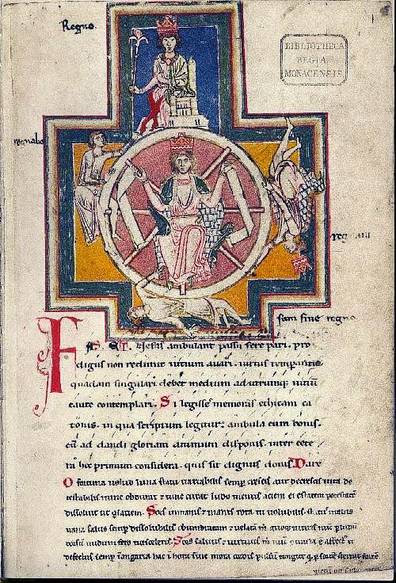
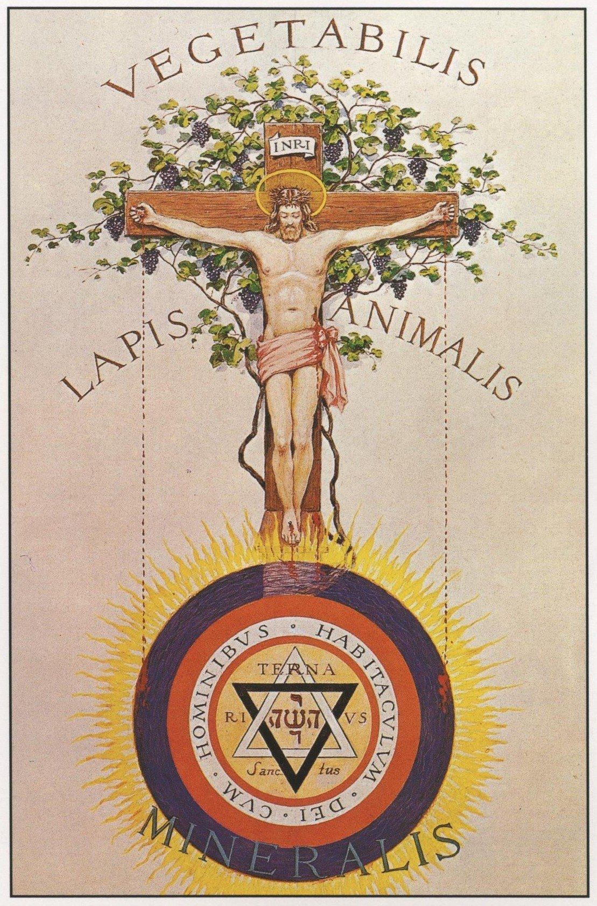
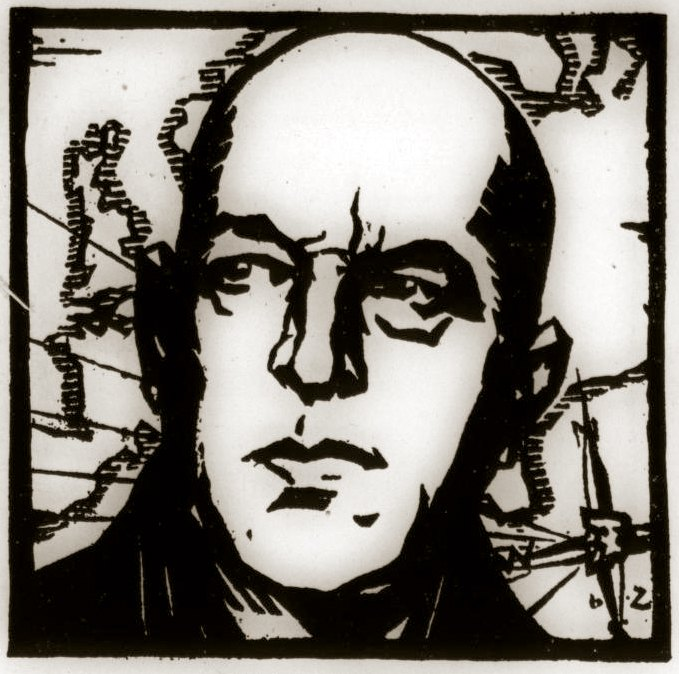
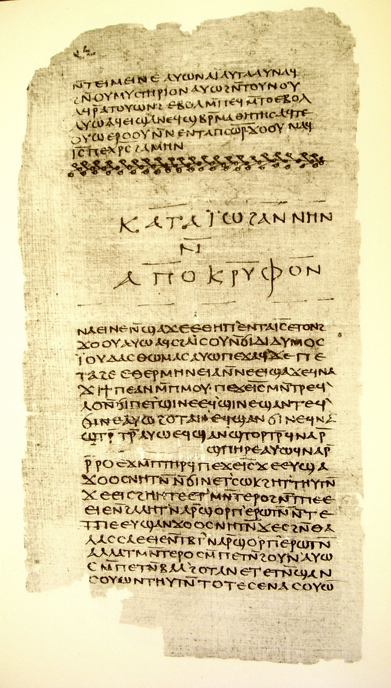
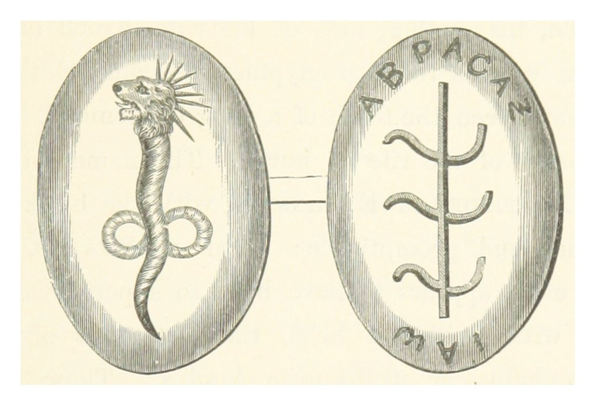
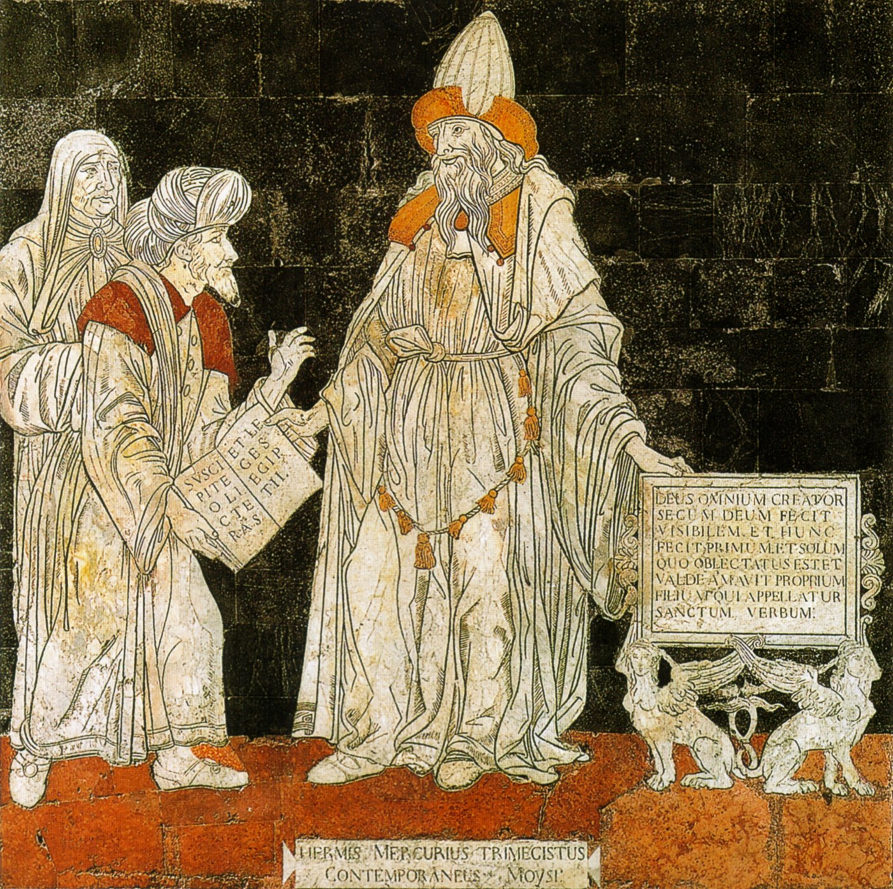
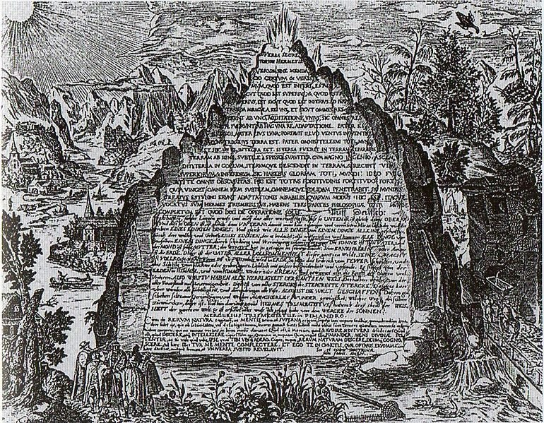
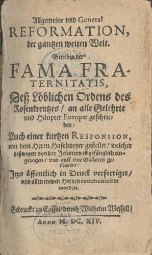
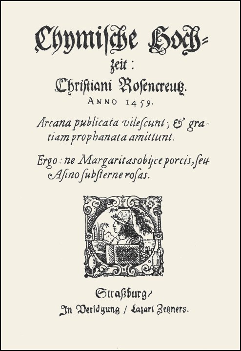

“For like as our door was after so many years wonderfully discovered, also there shall be opened a door to Europe.” — Fama Fraternitatis, 1614
Chapter One
The Miscount
Spring Hill, Florida — 2026
Act I — The Book on the Discard Cart
The book was on the discard cart because nobody had checked it out since 2019, and the Hernando County library system had a rule about that. Syx McAllister was thirteen and had come in for the air conditioning, which was the honest reason, and for a graphic novel about a boy who could talk to insects, which was the reason he would have given if anyone had asked. Nobody asked. The cart sat by the returns desk with a hand-lettered sign reading FREE — PLEASE TAKE, and on it, spine-up, dust-grey, was a hardcover called The Fourth Turning by William Strauss and Neil Howe. He took it because the title sounded like a fantasy novel. He was not entirely wrong.
He read the first forty pages sitting on the floor between the 900s and the water fountain, and by page forty he had stopped being a boy killing an afternoon and become something else, though it would be years before he had a word for it. The argument was simple enough that a thirteen-year-old could hold it and strange enough that it did not let go. History, the authors said, does not run in a line. It runs in a wheel roughly eighty to a hundred years around — the length of a long human life, which the Romans had called a saeculum — and that wheel has seasons. A High after a crisis, when institutions are strong and individuals are small. An Awakening, when the young tear at those institutions in the name of the spirit. An Unraveling, when the institutions rot and the individuals swell. And then a Crisis, which burns the field so the cycle can start again.
Syx looked up. Through the window of the library, US-19 was doing what US-19 always did: strip malls, a dead Ruby Tuesday, an insurance office with a hand-painted sign, palmettos going brown at the edges in the heat. It was 2026. He had been alive for thirteen years and every one of them had felt, in a way he had never been able to name, like the end of something that would not admit it was ending. Adults on television screaming at other adults on television. His mother checking her phone at the dinner table with the specific face of a person watching weather come in. He had assumed this was simply what the world was. The book on the floor in front of him was saying: no. This is what the world is right now. It is a season. It has a name.
He took the book home. He did not tell anyone. This became a habit that would last the rest of his life, and it started for an ordinary reason — he assumed that if the book were important, someone would have taken it before him, and since nobody had, it was probably nothing, and he did not want to be the boy who got excited about nothing. Later he would understand that this reasoning was almost exactly backward, and that the backwardness of it was itself a law: the thing everyone can reach is the thing nobody reaches for. But that came later. That summer he simply read it four times, and on the fourth pass he began keeping a notebook, because he had found something in the argument that he thought the authors had gotten wrong.
Here was the thing. He had counted five. Not four. He had been laying the American turnings out on graph paper, one square per year, and every time he ran the sequence he ended up with an extra span he could not fit into the model — a stretch after each Crisis and before each true High where the country was not yet rebuilding but was no longer burning. A gap. A hinge. Somebody, he thought, was not counting something. He was thirteen, he was working in pencil on the floor of his bedroom in Spring Hill, Florida, and he was arguing with two published historians. It did not occur to him that this was presumptuous. It occurred to him only that the graph paper did not lie.
Act II — Four, Not Five
The correction took him eleven months and it humiliated him, which turned out to be the most valuable thing that happened to him that year.
He had been sloppy. That was the whole of it. He had been dating the turnings from the events he had heard about in school — Pearl Harbor, the moon landing, the towers — rather than from the generational cohorts that actually drove the model, and because he had anchored on events rather than on people, his boundaries floated. When he finally sat down and did it Strauss and Howe's way, birth cohort by birth cohort, the fifth span evaporated. It had never been a phase. It had been his own error, given shape by the fact that he wanted to find one. He wrote in the notebook, in handwriting that had gotten smaller and more controlled over the year: I found a pattern because I was looking for a pattern. Everyone who has ever been wrong about history did exactly this.
The real structure, once he had it clean, was four turnings of roughly twenty to twenty-five years each, driven by four generational archetypes that arrived always in the same order. A Prophet generation born during a High — indulged children, righteous elders, the people who supply a civilization with its values and its arguments. A Nomad born during an Awakening — under-protected, alienated, pragmatic, the ones who hold things together with duct tape while the Prophets sermonize. A Hero born during an Unraveling — protected, confident, institutional, the ones who show up for the Crisis and get the statues. And an Artist, born during the Crisis itself: over-protected by parents who are frightened of the world, growing into thoughtful, process-minded, conflict-averse adults who never quite get to be the story.
Syx did the arithmetic on himself. Born 2013. The current Crisis had begun, on Howe's own reckoning, with the financial collapse of 2008, and was projected to reach its climax somewhere in the late 2020s or early 2030s. Which made him an Artist. Not a Hero. He read the archetype description four times looking for a way out of it and did not find one. Artists do not lead the Crisis; they are children during it, watching adults be afraid. Artists come of age into the High that follows and spend their lives refining, mediating, cataloguing, preserving. The Artist generation, he wrote, is the one that remembers. Then, underneath, in smaller letters: This is a demotion and I am going to accept it.
Accepting it changed what he wanted. He had spent the spring assuming that the point of knowing the cycle was to win it — to see the Crisis coming, position himself, be the thirteen-year-old who grew into the man who called it. That fantasy died against the archetype table. He was not built for the Crisis and the Crisis would be substantially over by the time he was twenty. Whatever advantage the knowledge gave him would have to be spent somewhere else, on a longer horizon, in a slower currency. He began, without quite framing it this way, to think in eighty-year units instead of eight-year ones. He was fourteen.
And the second discovery came out of the first, and it was the one that made everything after it possible. If the model was right, and if the next Crisis would land somewhere around the 2090s, then the people who would be leading that Crisis were not yet born. But the books they would read already existed. Every argument, every framework, every dangerous idea that would be picked up and used in 2090 was already sitting on a shelf somewhere right now, in most cases unread, in many cases uncatalogued, in some cases actively rotting. The Crisis generation would go looking for a usable past the way every Crisis generation always had. Someone was going to decide what they found.
Act III — What the Twenties Knew
He went looking for the last time someone had thought about this, and the answer surprised him: the 1920s.
The logic was not mystical, though it would later be mistaken for mysticism by people who did not follow his footnotes. If the wheel turned once every eighty to a hundred years, then the position on the wheel that the 2020s occupied — late Crisis, everything cracking, the old order visibly failing to explain itself — had last been occupied in the 1930s and, before the Crisis proper, in the anxious decade that preceded it. The 1920s were the last Unraveling-into-Crisis that Western civilization had run at full speed. Which meant that the people writing in the 1920s were, structurally, his contemporaries. They were standing where he was standing. They had the same view. They just had it a hundred years earlier and did not know how the story ended.
And what had they written? He made a list on the back page of the notebook, and it was an odd list, and it kept getting odder. Oswald Spengler's The Decline of the West, published in two volumes in 1918 and 1922, arguing that every high culture is an organism with a fixed lifespan of roughly a thousand years, moving through spring, summer, autumn, and a winter of soulless mechanization — and that the West was already in winter. Nikolai Kondratiev, in 1925, publishing on long waves in economic life: fifty- to sixty-year cycles of expansion and contraction in capitalist economies. (Kondratiev was later imprisoned and executed in the Soviet purges. Syx underlined that twice. There is a cost to being right about cycles in front of people who need history to be a line.) Arnold Toynbee, beginning his Study of History, sorting civilizations into genesis, growth, breakdown, disintegration.
And then, in the same decade, in a completely different register, the strange ones. William Butler Yeats — the poet, the Nobel laureate, the man in every high-school anthology — had published a book in 1925 called A Vision, and it was not a book of poems. It was an occult system, assembled from automatic writing sessions conducted with his wife George, describing history as a pair of interpenetrating spiral cones called gyres, one contracting as the other expands, turning over completely every two thousand years, subdivided by twenty-eight lunar phases through which both souls and eras must pass. The Second Coming — the falcon, the widening gyre, the rough beast slouching toward Bethlehem — was not a metaphor Yeats had invented for effect. It was a technical description, drawn from a system he believed was real, of what happens at the end of a cycle.
“Turning and turning in the widening gyre / The falcon cannot hear the falconer;” — W.B. Yeats, “The Second Coming,” 1920
And in 1928, in San Francisco, a twenty-seven-year-old Canadian named Manly Palmer Hall had published a folio-sized volume in a subscribers' edition of about five hundred and fifty copies, illustrated in full color, titled An Encyclopedic Outline of Masonic, Hermetic, Qabbalistic and Rosicrucian Symbolical Philosophy, which everyone called The Secret Teachings of All Ages. It argued that the world's mystery traditions were not separate inventions but dialects of one lost language, and that the language could be reassembled from its fragments if you were willing to read across the boundaries that respectable scholarship maintained. Syx found a scan of the 1928 edition on the Internet Archive at two in the morning on a school night and did not sleep. The Knapp plates loaded slowly on his connection, one band of color at a time, like something surfacing.

He was fourteen years old and he had just understood something that he would spend the next seventy years elaborating and that he would never state as baldly again as he stated it that night in his notebook: The decade that stands where we stand always produces two literatures. One is respectable and one is not. The respectable one is read at the time and forgotten. The unrespectable one is forgotten at the time and read at the next turning. If I want to know what the 2090s will read, I should read what 1928 wrote and nobody has opened since.
Chapter Two
The Twenties
2029 – 2034
Act I — Reading Through the Crisis
The Crisis climaxed while Syx was in his last year of high school and his first two years of college, and he experienced it the way the Artist archetype was supposed to: from indoors, at a slight remove, with a book open. He did not enlist in anything. He did not organize anything. He watched adults who had been certain become uncertain, and he watched a very small number of people be extremely useful and get almost no credit for it, and he wrote it all down in a series of composition notebooks he numbered rather than dated. What he remembered afterward was not the events. It was the texture — the specific quality of a national mood in which everyone agreed something had to change and nobody agreed on what, and the way that mood curdled and then, quite suddenly, around 2032, set.
He had been expecting it, and expecting it did not help as much as he had assumed it would. That was the second humiliation, and like the first it was instructive. Knowing the shape of the wave does not keep you dry. What it does — the only thing it does — is prevent you from believing that the wave is personal. His roommate's family lost their house and his roommate concluded that this had happened because of a specific villain, and Syx, who could see the villain's role in the machine but could also see the machine, understood that he could not say so out loud without sounding monstrous. He wrote that night: Cyclical knowledge is socially unusable during a Crisis. It reads as fatalism to people who are drowning. Say nothing. Take notes. The window for saying it opens in the High.
He read Spengler properly that year, all twelve hundred pages of the Atkinson translation, and came away with a divided verdict he never revised. Spengler's morphology — the idea that a culture is an organism with a destiny rather than a set of choices — was, he decided, wrong in its determinism and indispensable in its attention. Spengler had noticed something real: that late-stage cultures produce a recognizable style, a mechanized restlessness, a preference for the colossal over the beautiful, an inability to believe in their own founding stories. Whether that style was fate or merely a common outcome, Spengler had catalogued it better than anyone. Syx developed a technique here that became his lifelong method and eventually his scholarly signature: take the observation, refuse the mechanism.

He applied it to Kondratiev, whose long waves had never held up to econometric testing but whose question — is there a rhythm in economic life longer than any career — remained open and worth asking. He applied it to Toynbee, whose civilizational taxonomy had aged badly but whose insight about creative minorities and dominant minorities had aged extremely well. He applied it, finally and most usefully, to Strauss and Howe themselves, whose model he had now watched perform a live prediction with unnerving accuracy and whose mechanism — generational archetypes as quasi-personalities — he had come to regard as a useful fiction rather than a discovered law. They were right about the tide, he wrote, and I do not believe a word about the moon.
By the time the smoke cleared and the country began the specific, exhausted, institution-building work that Strauss and Howe called a First Turning, Syx McAllister was twenty years old, majoring in history with a minor in classics that everyone told him was useless, and quietly reading his way backward through a tradition that no history department in the country would have let him write about. He had figured out where the tradition lived: not in the libraries he was allowed into, but in the ones nobody was guarding.
Act II — The Open Libraries
The open libraries were, in 2031, one of the great unremarked facts of the century, and Syx may have been among the few thousand people alive who understood what they were for.
Sacred-texts.com had gone online in 1999, assembled by one man, John Bruno Hare, who had spent years scanning and hand-coding public-domain religious and esoteric literature and who had died in 2010 having explicitly placed the whole archive in the public domain. It held something like a hundred and sixty Western esoteric texts and a hundred and sixteen Gnostic ones. The Internet Archive held scanned facsimiles of books that existed in fewer than a thousand physical copies. Project Gutenberg had the translations. HathiTrust had the scholarly apparatus. Hermetic.com had the ceremonial material. None of it cost anything. None of it required credentials. All of it had been sitting there, fully indexed and fully searchable, for thirty years, while approximately nobody read it.
This struck Syx as the single strangest fact he had ever encountered, and he turned it over for months before he understood it. The material was not hidden. It had never been hidden. The Rosicrucian manifestos were three clicks away. The entire Corpus Hermeticum in Mead's 1906 translation was free. Hall's 1928 folio, a book that had originally cost more than a Ford, was a PDF. And the reason nobody read them was not suppression. It was that reading them required a very specific and unrewarded skill: the ability to hold a text that makes false claims and extract the true structure inside it without either believing the false claims or discarding the text.
Academia could not do this, because academia had spent three centuries defining itself against exactly this material. He had read enough historiography by now to know the shape of that story — how, in the wake of the Reformation and the Enlightenment, a whole cluster of traditions had been swept into a single container and labelled rejected. Not refuted individually. Rejected collectively, as a boundary-marking operation, so that the new rationality could know what it was by knowing what it was not. The container had a name now in the scholarly literature. It was called Western esotericism, and it was less a tradition than a waste-basket.
And the people who did read the material — the practitioners, the forum-dwellers, the seekers — could not do it either, because they believed it. They took the false claims at face value and therefore could not see the structure, in the same way that a man who believes a map is the territory can never notice that the map is beautifully drawn. Both groups looked at the same shelf. Neither could read it. Syx wrote in notebook eleven: There is an unoccupied position here. It requires believing nothing and dismissing nothing. It is available to anyone and taken by no one. I am going to take it.
Act III — Hall's Method, Hall's Failure
He spent 2033 with The Secret Teachings of All Ages the way a mechanic spends a winter with an engine.
The book was, as history, unreliable, and he established this early and thoroughly so that he could stop worrying about it. Hall was twenty-seven when he wrote it, working almost entirely from secondary sources, in a genre that predated modern textual criticism and largely ignored it where it existed. His datings were frequently wrong. His Egypt was a nineteenth-century Egypt of the imagination. His sources were Theosophical where they should have been documentary, and he presented conjecture in the same confident register as fact, which is the specific sin that makes a book unusable to scholars and irresistible to everyone else. Syx made a list of Hall's verifiable errors and it ran to nine pages.
Then he set the nine pages aside and asked the question that the nine pages were designed to prevent him from asking: what was Hall actually doing?
And the answer was that Hall was running a compression algorithm. The Renaissance had a name for the underlying thesis — prisca theologia, the ancient theology, the idea that a single primordial wisdom lay behind all the world's religious and philosophical systems, fragmented by time and bad transmission. Hall inherited that thesis and applied it at scale: Pythagorean ratio, Egyptian initiation, Qabbalistic emanation, alchemical process, Tarot iconography, Masonic ritual, all treated as dialects rather than as separate inventions, all compressed into one interpretive frame. The claim was that if you assembled the world's symbolic material in one place and looked at it as a single corpus, non-random shared structure would appear. Hall could not test that. He asserted it, gorgeously, at folio scale, and then he built a research library in Los Angeles and spent fifty-six years elaborating the assertion.
Syx wrote: Hall's thesis is a hypothesis about a dataset. He had no method for testing it because he had no way to hold the dataset and no statistics to run on it if he had. He was not a bad historian. He was a very early data scientist working entirely by hand and by eye, with no way to be wrong, which is the only real thing missing. And then, three lines down, the sentence that would eventually appear — sanded down, footnoted, and stripped of every trace of where it came from — in a paper that seventeen governments would circulate among their planning staffs sixty years later: Every esoteric system in the Western tradition is a compression of observations about human experience made under conditions of severe data scarcity. They failed as science for exactly one reason: no mechanism for discarding.
That was the whole of it, and he saw it at twenty-one, and it took him another fifty years to say it in a way anyone would listen to. The traditions accumulated and harmonized. They never pruned. Every correspondence was true; every tradition was a fragment of the one truth; nothing could ever be shown false. Which meant they filled with noise at exactly the same rate they filled with signal, and after enough centuries the ratio was hopeless, and the whole enterprise collapsed under its own inclusiveness while the young sciences — which threw things away ruthlessly and constantly and without sentiment — went past it as if it were standing still. It was standing still. It had no way to move.
Chapter Three
The Stacks
2035 – 2048
Act I — Choosing the Small Door
He took the librarianship for the reason that everyone assumed was a failure of ambition, and he never once corrected them.
The First Turning was underway by then and behaving exactly as advertised: institutions rebuilding, a rediscovered appetite for the collective, a national mood that Syx privately described in his notebooks as competent and slightly boring, which is the best mood a country can be in. His cohort was going into the new agencies, the rebuilt regulators, the enormous infrastructure programs. He had the grades for any of it. Instead he took a master's in library and information science, and then a junior position in a special collections department at a mid-tier state university, cataloguing manuscript material at a salary that made his mother ask, twice, whether he was all right.
He was more than all right. He had worked out the position from first principles and he was quite sure it was the best one available to a person with his archetype and his knowledge. Consider what a special collections librarian actually controls, he wrote. He controls acquisition — what enters the permanent record. He controls description — the metadata, the finding aid, the subject headings, which determine whether a thing can ever be found again by someone who does not already know it exists. He controls preservation — what gets conserved, digitized, kept in the good storage. And he controls access — who is told what is there. Four levers. Each one operates on a timescale of centuries. Each one is regarded by the surrounding culture as clerical work and is therefore almost entirely unsupervised.
“The historian argues with his contemporaries,” he wrote in notebook thirty-one. “The librarian arranges what the next century will be able to argue about. The historian's influence expires when his generation dies. The librarian's compounds. I do not want to be read. I want to determine what is readable.”
He was twenty-two years old and he had just described, without any grandiosity and without telling a single living soul, a plan with a horizon of a hundred and twenty years. He would keep it for the rest of his life and it would work.
Act II — The Demiurge and the Catalog
The Gnostic material found him rather than the other way around, and it arrived through the back door, in the form of a cataloguing problem.
The department had acquired, in an undistinguished lot from a deceased alumnus, a run of G.R.S. Mead's works: Fragments of a Faith Forgotten (1900), the three volumes of Thrice-Greatest Hermes (1906), the Pistis Sophia translation, and eight of the eleven little books in the Echoes from the Gnosis series. Nobody in the department knew what to do with them. They were not quite religion, not quite classics, not quite occult, and the existing subject headings scattered them across four unrelated call ranges where none of them would ever be found together. Syx spent a week on the problem, which meant he spent a week reading them, which is how these things actually happen.
Mead had been Blavatsky's private secretary, which was enough to get him excluded from the academic conversation for eighty years, and he had also been the first person writing in English to take the Gnostic corpus seriously as a corpus. He worked from the Askew and Bruce codices and from the hostile summaries of the Church Fathers, because that was all anyone had — the Nag Hammadi library would not be dug out of the Egyptian sand until 1945, twelve years after Mead's death. He got a great deal wrong. He also got the shape right, before the evidence arrived that would have let him get it right, which is a specific kind of intellectual event that Syx had begun to collect.

And the content did something to him that no other material had. The Gnostic cosmology, in its broad strokes: a true and unknowable source; a pleroma of emanated aeons; a catastrophic error within that fullness that produces a lesser being — the demiurge, the craftsman — who fashions the material world without knowing what lies above him and believes himself to be the only god there is. Beneath him, the archons, who administer. And within the botched creation, sparks of the original light, trapped in matter, forgetting. Salvation not by faith — pistis — but by gnosis: direct knowledge, recognition, waking up. Syx read the Nag Hammadi texts in the standard scholarly translation and then, for the vocabulary, in Mead's antique one, and put the book down, and sat in a windowless room in a state university on a Tuesday afternoon in 2037.
“[The Demiurge,] being incapable of recognising any spiritual essences, imagined himself to be God alone, and declared through the prophets, ‘I am God, and besides me there is none else.’” — Irenaeus, Against Heresies, Book I, Ch. 5 (c. 180 CE; Roberts–Donaldson trans., 1867)

Because he recognized the demiurge. Not theologically — he held no beliefs about any of this and would hold none for the rest of his life. Structurally. The demiurge is an administrative system that has forgotten its own origins and mistaken itself for the whole of reality, and that is the most precise description of a large bureaucracy, a legal code, a discipline, or a catalog that anyone has ever written. He was, right then, in that room, an archon. He administered a system of categories that determined what could be found, that had been inherited from people whose reasons were lost, and that presented itself to everyone who used it as simply the way the world was arranged. The subject heading is the archon, he wrote. It rules by determining what can be thought of as a thing. And it followed — this was the turn that made his career — that the Gnostic literature was not primarily religious literature at all. It was the earliest surviving body of writing about the experience of being inside a false classification system and suspecting it. No wonder nobody could place it. It was a description of the thing doing the placing.
Act III — The Twenty-Year Acquisition
He began buying in 2039 and he did not stop for forty years, and the whole operation cost the university less than a single mid-career hire.
The method was simple and depended entirely on knowing where he was on the wheel. In a First Turning, a rebuilding society is confident, forward-facing, institutionally minded, and profoundly uninterested in its own occult margins. Prices for esoteric material in 2039 were at a generational floor. Estate lots came in from the deaths of the last serious private collectors — men and women born in the 1950s who had assembled shelves during the Awakening and whose children wanted the house cleared by Friday. Syx bought Waite's The Brotherhood of the Rosy Cross (1924) and his Real History of the Rosicrucians (1887). He bought Yeats's A Vision in both the 1925 and the 1937 states, because the differences between them were a record of a man revising a metaphysics. He bought Evans-Wentz, Ouspensky, the Kybalion, Fludd in facsimile, Michael Maier, run after run of Theosophical periodicals that no institution had thought worth binding.
He bought, when he could, the things nobody wanted at all: reading copies with marginalia, correspondence files, the working papers of minor figures, the annotated flyleaf of a man arguing with a book in 1931. Association copies were expensive; annotated junk was free. And annotated junk, Syx knew, was the only surviving record of how these texts were actually used — which was a question no one had ever systematically asked and which would be the central question of the field in eighty years, because by then the texts would be trivially available and the reception history would be the only scarce thing left. He was buying the scarcity that had not happened yet.
The finding aids were the real work, and they were invisible, and they were where he spent himself. A finding aid is a document that describes an archival collection so that a researcher can determine, without traveling, whether the collection contains what they need. It is written by one person, usually in a hurry, and it governs the discoverability of the material for as long as the material survives. Syx wrote his slowly. He cross-referenced across the artificial boundaries — religion, occult, science, medicine, printing history — that had kept this material invisible. He wrote scope notes that named the intellectual problems a collection could answer rather than merely listing what was in the boxes. He seeded, quietly and accurately, the connective terms that would let a researcher in 2100 walk from an alchemical manuscript to a nineteenth-century physiology text to a Theosophical pamphlet in three moves.
He was, in other words, rewriting the archons. Not overthrowing the classification system — he had read enough Gnostic literature to know how that story ends, and it ends with a new demiurge who is worse because he is sincere. He was doing something slower and far more effective: he was leaving the categories in place and quietly building doors between them, one finding aid at a time, in documents so boring that no committee ever read one.
By 2048 he had tenure, a reputation as a reliable and slightly dull colleague, four hundred and six linear feet of material that had cost almost nothing, and the beginnings of the only complete cross-indexed archive of the Western esoteric reception tradition in North America. His dean described him in a performance review as “dependable, low-profile, excellent with donors.” Syx had the sentence framed. It was the most successful thing he had ever accomplished.
Chapter Four
The Emerald Hours
2049 – 2068
Act I — As Above, So Below
The Hermetic material was the last of the three bodies he took on and the one he came to think of as the load-bearing wall, because it was the only one that had ever successfully crossed over into respectable science and it had done so by being catastrophically misunderstood.
The Corpus Hermeticum is a collection of Greek philosophical dialogues, written in Roman Egypt somewhere between the first and third centuries CE, in which a teacher called Hermes Trismegistus instructs a series of students on the nature of mind, cosmos, and the ascent of the soul. Its companion text, the Asclepius, survived in Latin. Its most famous single artifact is the Tabula Smaragdina, the Emerald Tablet, a short and cryptic alchemical text known first in Arabic, containing the line that every subsequent occultist would build on: that which is above corresponds to that which is below, and that which is below to that which is above, in the working of the one thing.

“That which is below is like that which is above, and that which is above is like that which is below, to do the miracles of one only thing.” — Tabula Smaragdina, trans. Isaac Newton, MS. Add. 3975, c. 1680

The Renaissance received these texts in 1463, when Cosimo de' Medici ordered Ficino to stop translating Plato and translate the Hermetica first — because the Hermetica were believed to be older, to be Egyptian, to be the actual source-code of which Plato was a later dialect. That belief drove two centuries of European intellectual life. And then, in 1614, Isaac Casaubon applied philology to the texts and demonstrated from their vocabulary and their content that they were not Egyptian, not primordial, but late antique Greek compositions, roughly contemporary with the New Testament. The entire chronology inverted. The source became a derivative.
Syx found this the most instructive event in the history of the tradition, and he taught it, in one form or another, for thirty years. Casaubon was right. The dating held; it holds today. And it did not matter at all to what the Hermetica had already accomplished, because by 1614 the ideas had already done their work — they had helped produce Bruno, Kepler's mysticism, Fludd, Newton's alchemy, the entire proposition that the universe might be mathematically legible because it was the product of a mind. A false pedigree had powered a true revolution. Syx wrote: The provenance was fraudulent and the consequences were real. This is not a paradox. It is the ordinary condition of intellectual history, and the only people who find it shocking are the ones who believe ideas are validated by their ancestry.
And there was the coincidence that he could never quite let alone, and that he eventually built an entire paper around. 1614. In that same year, in Kassel, an anonymous pamphlet appeared announcing the existence of a secret brotherhood dedicated to the reformation of the whole wide world. One tradition was killed by philology and another was born by fiction, in the same twelve months, four hundred miles apart. He kept the two dates on a card above his desk for forty years. He never explained the card to anyone who asked.
Act II — Rhythm Compensates
The 1908 book taught him more about how ideas actually travel than any monograph he ever read, and it was, by every scholarly standard, worthless.
The Kybalion was published in Chicago by “Three Initiates,” which was almost certainly William Walker Atkinson working alone or nearly so. It claimed to transmit the essential teachings of Hermes Trismegistus. It transmitted nothing of the kind; its seven principles bear only a decorative relationship to the actual Hermetica, and it is best understood as New Thought philosophy wearing an Egyptian costume. It has never been taken seriously by a single historian of Hermeticism. It has also, since 1908, never been out of print, and it is very likely that more human beings have encountered “Hermeticism” through this one small book than through every scholarly translation combined.
Syx cared about the fifth principle. The Principle of Rhythm: everything flows out and in, everything has its tides, all things rise and fall, the pendulum-swing manifests in everything — and the measure of the swing to the right is the measure of the swing to the left. The text calls the second half of that the Law of Compensation: the extent of the swing in one direction determines the extent of the swing in the other. It is applied, in the book, to moods and fortunes and mental states, in the self-help register of its era.
“Everything flows, out and in; everything has its tides; all things rise and fall; the pendulum-swing manifests in everything; the measure of the swing to the right is the measure of the swing to the left; rhythm compensates.” — The Kybalion, Ch. XI, 1908
He had been tracking historical cycles for thirty-five years by then and he recognized what he was looking at, which was a folk statement of a real and non-obvious dynamical property. Systems with restoring forces and delay overshoot. The magnitude of a correction is a function of the magnitude of the accumulated deviation. This is true of pendulums, of predator-prey populations, of credit cycles, of political coalitions, and — this was his contribution — of institutional legitimacy, which accumulates deviation invisibly and corrects violently. Atkinson had no differential equations and no data. He had noticed the pattern by living in a body and paying attention, and he had written it down in the only vocabulary available to him, and the vocabulary had made it invisible to everyone equipped to formalize it.
That became the McAllister method in its mature form, and by the 2050s it had a name in a small number of very specific rooms. Take the observation. Refuse the mechanism. Restate in the operative vocabulary of the receiving century. He never claimed the esotericists had been right. He claimed something far more defensible and far more useful: that they had been observing, under bad conditions, with no way to prune error, and that a certain fraction of what they recorded was real signal that had been discarded along with the noise because nobody had ever bothered to separate the two. He proposed to separate them, item by item, retail rather than wholesale, for the rest of his life.
Act III — The Quiet Papers
The Awakening arrived on schedule, somewhere around 2054, and it made him useful in a way he had been waiting forty years for.
He had predicted it in notebook nineteen at the age of nineteen and the prediction had been almost embarrassingly correct: a Second Turning, a spiritual convulsion aimed squarely at the institutions his own generation had spent the High building, driven by young people born into a High and bored by it. The particular flavor was not what he had guessed — no one guesses the flavor — but the structure was exact. And what a society does in an Awakening, invariably, is go looking for a usable past. It ransacks its own attic for anything that might authorize a new way of being. The demand for esoteric material went vertical.
Syx McAllister owned the attic. He had been buying it for fifteen years at First Turning prices while it was worthless.
He never sold a book. What he did instead was write, and the papers came out slowly — eleven of them across nineteen years, in unglamorous venues: a bibliographical society quarterly, two archival science journals, a history of the book annual, one strange piece in a policy review that a former student had ended up editing. They were not exciting. They had titles like “Reception Structures in Pre-Nag Hammadi Anglophone Gnosticism” and “Discard Practices and Signal Loss in Closed Interpretive Systems.” They were exhaustively footnoted, admitted their limits in the first two pages, and made no claim that could not be defended from the material. This restraint was entirely deliberate and it was the whole of the strategy: he had understood at twenty-two that in this field, the only thing that travels is the thing that cannot be dismissed, and that any argument with a single unsupported flourish in it would be dismissed on the flourish and the rest thrown out with it.
They traveled. Not widely — he never had more than a few thousand readers in his life — but with a precision that would have looked like conspiracy to anyone who did not understand how ideas actually move. A paper on discard practices in closed systems was cited in a working paper on institutional epistemics; the working paper was read by a sovereign wealth fund's research desk; the desk's framing memo reached a finance minister. A piece on the 1614 inversion — the year Hermeticism died of philology and Rosicrucianism was born of fiction — became, for reasons Syx found funny for the rest of his life, required reading in two national intelligence services, because it was the clearest available treatment of how a fabricated provenance can produce genuine institutional consequences. A late essay on the Gnostic demiurge as a model of self-forgetting administration circulated among governance researchers under a title he had not chosen.
He was invited to nothing. He gave four talks in his entire career and declined every honor that would have required a photograph. When people asked what he did, he said he was a librarian, and when they said oh, that's nice, he agreed that it was. In 2061 a former student, by then reasonably powerful, asked him over dinner why he had never tried to be known. Syx thought about it for a while and gave the only fully honest answer of his professional life. “Because I'm an Artist,” he said. “I checked when I was fourteen. We don't get the statue. We get the archive, and we get to decide what's in it, and that's a better trade than anyone realizes.” The student did not understand the reference. Syx did not explain it.
Chapter Five
Post CXX Annos
2069 – 2101
Act I — Ludibrium
He came to the Rosicrucians last, in his fifties, which was the correct order, because they could only be understood by someone who had already spent thirty years watching what fictions do.
The documents are three. The Fama Fraternitatis, printed at Kassel in 1614, announcing a secret brotherhood founded by one Father C.R.C., dedicated to the reformation of the whole wide world, and addressed to all the learned and rulers of Europe. The Confessio Fraternitatis, 1615. And The Chymical Wedding of Christian Rosenkreutz, 1616 — a seven-day alchemical dream-allegory, the only one of the three that names the founder, and the only one whose authorship is reasonably certain: Johann Valentin Andreae, Lutheran theologian, who later in life referred to the whole affair as a ludibrium. A jest. A play. A game.

Nobody ever found the brotherhood. There was no brotherhood. What there was, instead, was one of the most consequential events in European intellectual history: an announcement of an organization that did not exist, which caused hundreds of pamphlets, which caused a generation of learned men across Europe to begin looking for one another, which contributed materially to the intellectual climate out of which actual learned societies — including, in a contested but non-trivial sense, the Royal Society — eventually emerged. The fiction did not describe a network. The fiction generated one. Men searching for an invisible college found each other in the course of searching, and became a visible one.
Syx wrote his best paper on this, in 2073, at fifty-nine, and it was the only thing he ever published that he permitted himself to be proud of. Its argument: that the manifestos should be classified not as hoaxes but as coordination documents — texts whose function is not to convey true information but to create common knowledge of a shared intention among strangers who cannot otherwise locate one another. He traced the form forward: manifestos, prospectuses, founding charters, mission statements, the entire genre of the announced-institution-that-does-not-yet-exist. He was careful, footnoted, and made no claim beyond the documents. The paper is still cited. Almost nobody who cites it knows that its author had, by the time he wrote it, been running the experiment himself for thirty-four years.

And then there was the vault. In the Fama, the brothers are renovating their house when a nail pulls a brass memorial plate from the wall, taking plaster with it and exposing a hidden door. On the door, in large letters:
“POST CXX ANNOS PATEBO.” After one hundred and twenty years I shall open — Fama Fraternitatis, 1614
Behind it, a heptagonal chamber, seven walls of five feet each, eight feet high, lit from above by a sun that is not the sun, and beneath a round altar the undecayed body of the founder, dead one hundred and twenty years and buried by men who had arranged for it to be found precisely now, by successors they would never meet, at an interval they had calculated in advance.
Act II — Building the Vault
He was fifty-nine when he understood that he had been designing one for forty-five years without admitting it, and sixty-one when he started building it properly.
The Unraveling had begun by then — right on schedule, the mid-2070s, institutions hollowing, individuals swelling, the specific late-autumn brittleness he had read about in Spengler at eighteen and now got to watch from inside with a scholar's detachment and an old man's grief. He had also, by then, done the arithmetic he had been avoiding. If the wheel held, the next Crisis would begin around 2090 and climax somewhere in the 2100s. He would be in his late seventies at its onset and almost certainly dead before its resolution. The generation that would need what he had assembled had not yet been born. He would never meet a single one of them.
So he stopped writing for his contemporaries. The last twenty years of his working life went entirely into the four levers, aimed downrange. Acquisition: he spent the Unraveling buying, again, at another generational floor, because an Unraveling public has no patience for the past. Preservation: he fought a nine-year internal war, entirely by memo, to get the collection's conservation and migration schedule written into the university's endowment covenants rather than its operating budget — because operating budgets are cut in a Crisis and covenants are not. He won. It is the single most important thing he ever did and it appears in no publication.
Description: he rewrote every finding aid in the collection himself, by hand, between 2081 and 2088, at night, at the age of sixty-eight to seventy-five. Not to correct them — they were already good. To re-aim them. He had spent sixty years studying what a society reaches for at each point on the wheel, and he knew, with as much precision as anyone has ever had about such a thing, what questions a Crisis generation asks. They ask: has this happened before. They ask: what did people do. They ask: who saw it coming and what were they reading. He wrote scope notes that answered those questions specifically, buried in documents so procedurally dull that no administrator in three generations would ever open one.
And access. This was the vault. He established, with a lawyer who thought him charming and eccentric and drafted exactly what he asked for, a deed of gift covering the whole collection, his forty-two working notebooks, and his complete correspondence — a full account, in his own hand, of the method, the plan, the arithmetic, and the six major errors he had made. The papers are not sealed. That was the point; he loathed secrecy and thought it was where esoteric traditions went to die. They are simply not described. No finding aid. No catalog record. They sit in the good storage under a covenant that funds their preservation and requires nothing else. The deed contains a single instruction to the university's librarian: that a complete finding aid be prepared and published, and the collection announced to the profession, one hundred and twenty years from the date of deposit. Deposited 2089. Opening 2209.
Act III — The Long Reader
He retired in 2091, at seventy-eight, three years after the Crisis began, and lived another ten years in a small house with too many books and a view of nothing in particular.
The Crisis was worse than he had expected and better than he had feared, which he had read enough to know is what everyone says about every Crisis. He watched the young Heroes do what Heroes do — organize, mobilize, believe things with a wholeness he had never once managed — and he found, to his surprise, that he was not condescending about it. He had spent his life proving that the people who see the pattern are never the people who move the world, and he had made his peace with which of those he was. His grandniece, born 2074, a Hero to the bone, argued with him at holidays about whether anything was inevitable. He always took the side of contingency. He believed it, mostly.
He read, in his last decade, almost nothing new. He went back through the whole sequence one final time in the order he had first encountered it — Strauss and Howe, then Spengler, then Yeats, then Hall, then Mead, then the Nag Hammadi codices, then the Corpus Hermeticum, then the three manifestos — and he found that his verdicts had barely moved in sixty years, which he took as evidence either of consistency or of ossification and could not decide which. The one that had grown, unexpectedly, was Yeats. Not the system; the system was nonsense and Yeats had half-known it. But the falconer — the image of a civilization losing contact with the thing it had launched — had gotten truer every decade of his life, and he could no longer read it as literature.
The last entry in notebook forty-two is dated eleven days before his death in the autumn of 2101, and it is not about cycles. It is about the miscount. He returns, at eighty-eight, to the thirteen-year-old on the floor of a bedroom in Spring Hill, Florida, who counted five turnings where there were four and had to spend eleven months learning that he had found the fifth because he wanted to. And he writes that he had been wrong about being wrong. There is a fifth turning, he says. It is not a phase of history, because history has only four. It is the interval that runs underneath all four — the transmission interval, the archivist's span, the work of carrying something across a gap longer than any life, from people who will die to people who are not born. It has no season and produces no events and appears in no model, because the people who perform it are specifically the ones history does not record. We are the ones who hand it over, he wrote. There is no name for the turning we do. I have looked. I am content that there is not.
He died in October. The obituary in the university bulletin was four sentences long and described him as a dedicated member of the library faculty who had served the institution for fifty-six years. Two hundred and eleven people cited his papers that year, and thirty-one thousand people encountered his ideas without ever encountering his name, which was the arrangement he had chosen at twenty-two and never once regretted. The collection went into the good storage. The covenant funded it. The instruction sat in the deed of gift like a nail in a wall.
And in the spring of 2209, a librarian whose name Syx McAllister never knew and never could have known will pull a routine covenant review, find an instruction a hundred and twenty years old, walk down into a temperature-controlled room in a building that has been renamed twice, and open four hundred and six linear feet of the Western esoteric reception tradition, forty-two handwritten notebooks, and a full confession of method — deposited by a man who calculated, correctly, from the pattern of a wheel he had first traced in pencil on graph paper at thirteen, exactly when they would be needed again.
A Note on Sources
Every text Syx reads is real and, with the exception of his own papers and notebooks, publicly available.
Cyclical history: William Strauss & Neil Howe, The Fourth Turning (1997) and Generations (1991) — saeculum of 80–100 years, four turnings of 20–25 years (High, Awakening, Unraveling, Crisis), four archetypes (Prophet, Nomad, Hero, Artist). Oswald Spengler, The Decline of the West (1918/1922). Nikolai Kondratiev, “The Long Waves in Economic Life” (1925; English trans. 1935) — Kondratiev was executed in the Soviet purges in 1938. Arnold Toynbee, A Study of History (from 1934). Ibn Khaldūn, The Muqaddimah (1377) on asabiyyah. Polybius on anacyclosis. W.B. Yeats, A Vision (1925; rev. 1937) — gyres, the Great Wheel, 28 phases, 2,000-year cycles.
Gnosticism: The Nag Hammadi library (discovered 1945). G.R.S. Mead, Fragments of a Faith Forgotten (1900), Pistis Sophia, Echoes from the Gnosis (1906–08) — all at sacred-texts.com. Mead was Blavatsky's secretary and the first serious Anglophone Gnostic scholar, working entirely pre-Nag Hammadi.
Hermeticism: The Corpus Hermeticum and Asclepius, in Mead's Thrice-Greatest Hermes (1906) or Copenhaver's modern translation. The Tabula Smaragdina. Ficino's 1463 translation for Cosimo de' Medici; Isaac Casaubon's 1614 redating, which established the texts as late-antique rather than primordially Egyptian. The Kybalion (1908), by “Three Initiates” (almost certainly William Walker Atkinson) — Chapter XI, the Principle of Rhythm and the Law of Compensation.
Rosicrucianism: Fama Fraternitatis (Kassel, 1614), Confessio Fraternitatis (1615), The Chymical Wedding of Christian Rosenkreutz (1616), attributed to Johann Valentin Andreae, who later called it a ludibrium. The vault: POST CXX ANNOS PATEBO, heptagonal, seven walls of five feet. A.E. Waite, The Real History of the Rosicrucians (1887) and The Brotherhood of the Rosy Cross (1924). Frances Yates, The Rosicrucian Enlightenment (1972) and Giordano Bruno and the Hermetic Tradition (1964).
The synthesis: Manly P. Hall, The Secret Teachings of All Ages (1928) — folio subscribers' edition, ~550 copies, plates by J. Augustus Knapp, written at 27. Wouter Hanegraaff, Esotericism and the Academy: Rejected Knowledge in Western Culture (Cambridge, 2012) — the “waste-basket category.”
A Note on Images
Every plate reproduced here is a genuine historical artifact, drawn from public-domain scans and photographs (all published before 1931, or reproductions of works far older). None are illustrations of Syx McAllister or of events in the story — they are the actual primary sources he is described reading.
Rota Fortunae (Carmina Burana manuscript, Bavaria, c. 1230) — Bayerische Staatsbibliothek, via Wikimedia Commons. Fama Fraternitatis title page (Kassel, 1614) — Wikimedia Commons. Chymische Hochzeit Christiani Rosencreutz title page (Strasbourg, 1616) — Wikimedia Commons. A Rosicrucian Crucifixion, J. Augustus Knapp, from The Secret Teachings of All Ages (1928) — Wikimedia Commons. Hermes Mercurius Trismegistus, marble floor mosaic by Giovanni di Stefano, Siena Cathedral (1488) — Wikimedia Commons. The Emerald Tablet, engraving from Heinrich Khunrath's Amphitheatrum Sapientiae Aeternae (1606) — Wikimedia Commons. Nag Hammadi Codex II, folio 32 (4th c. CE, recovered 1945) — Wikimedia Commons. Abraxas gem engraving, from C.W. King's study of Gnostic gems (1851) — Wikimedia Commons. Oswald Spengler, woodcut portrait by Bertrand Zadig (1926) — Wikimedia Commons.
All images are in the public domain in the United States (published before January 1, 1931) and are reproduced here for their historical and educational value alongside the primary-source quotations they accompany.